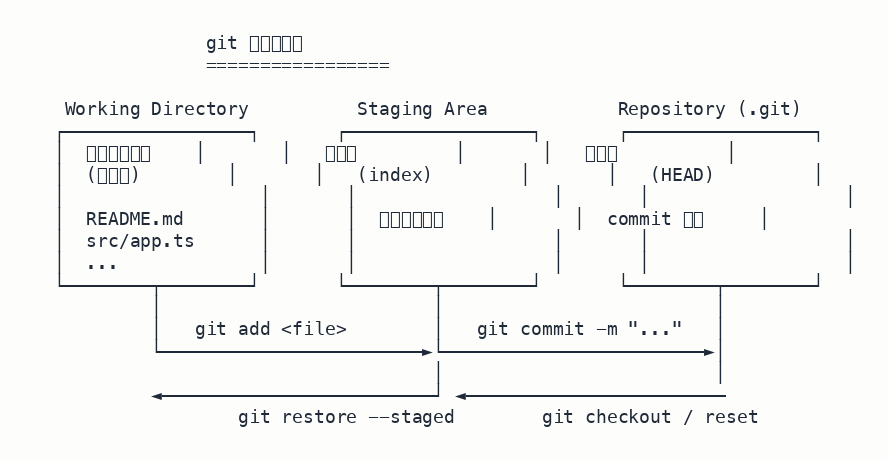

第 1 课 · git 三区与基础命令
git 的所有命令都在做一件事——在三个区域之间搬数据。理解了三区模型，所有 add/commit/reset/checkout 都有了统一答案。
一、三个区域是什么
每个 git 仓库内部有三个存放数据的地方：
- 工作区（Working Directory）——你眼睛看到的、编辑器里改的那些文件。
- 暂存区（Staging Area / index）——git 内部的一块缓冲，
git add把工作区改动复制到这里，准备打包成一个提交。 - 版本库（Repository / HEAD）——commit 历史本身。
git commit把暂存区的快照永久写入历史。

改动的自然流向是从左到右：
工作区 ──git add──▶ 暂存区 ──git commit──▶ 版本库记忆锚点：三区不是抽象概念，是 .git/ 目录里真实存在的数据结构——工作区是文件系统，暂存区是 .git/index，版本库是 .git/objects 里的 commit 链。
二、四条基础命令
| 命令 | 作用 | 数据流向 |
|---|---|---|
git init | 把当前目录变成 git 仓库（创建 .git/） | 建立基础设施 |
git add <file> | 把工作区改动写入暂存区 | 工作区 → 暂存区 |
git commit -m "..." | 把暂存区快照提交到版本库 | 暂存区 → 版本库 |
git status | 看工作区/暂存区当前状态（不会改任何东西） | 只读检查 |
典型工作流：
git init # 第一次：把目录变成仓库
echo "# my-project" >> README.md # 工作区新建文件
git add README.md # 暂存它
git status # 看一眼，确认暂存了
git commit -m "init: add README" # 提交到版本库
git log --oneline # 看历史易错点：commit 不会自动包含工作区的改动——它只提交已经 add 到暂存区的内容。新手常改完文件直接 commit，结果发现这次提交是空的。
三、看历史：git log
提交多了之后，需要查「以前发生过什么」。最常用的形式是：
git log --oneline # 每条提交一行：短 hash + 说明
git log --oneline -5 # 只看最近 5 条
git log --stat # 每条提交还显示改了哪些文件、增删行数--oneline 是日常查历史的默认形式——一行一条，一眼看完全部提交时间线。
四、撤销的三种姿势
改错了怎么办？看你错在哪一区，撤销方式不同：
工作区改错
git restore <file>
（旧写法 git checkout -- <file>）
用暂存区/版本库的版本覆盖工作区，丢掉未暂存的改动。
暂存区加错
git restore --staged <file>
（旧写法 git reset HEAD <file>）
把暂存区的改动退回工作区，但保留改动本身。
最难的是撤销整个 commit，有两条路：
git reset —— 移动分支指针「回到过去」，被越过的提交从历史消失。例：git reset --hard HEAD~1 抹掉最近 1 条提交。
git revert —— 新建一个「反向提交」抵消原提交，历史里能看到原提交 + 撤销提交。例：git revert <commit-hash>。
团队协作铁律：已经 push 到共享分支的提交，禁用 reset（会改写历史，其他人 pull 会冲突），必须用 revert。reset 只在自己本地未推送的提交上安全使用。
这个易混点是高频错题，建议搭配错题精讲《git reset vs git revert》深入读一遍：→ 错题精讲。
五、下一步
- 读完这课，去答题页刷 GIT-001 到 GIT-007 七道题。
- 错题别放过——看错题精讲《git reset vs revert》。
- 下一课：Linux 目录与权限。